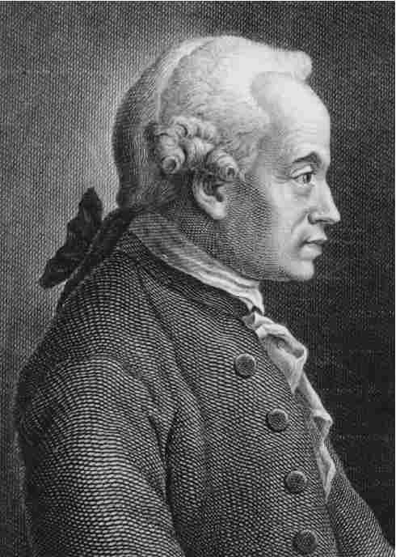
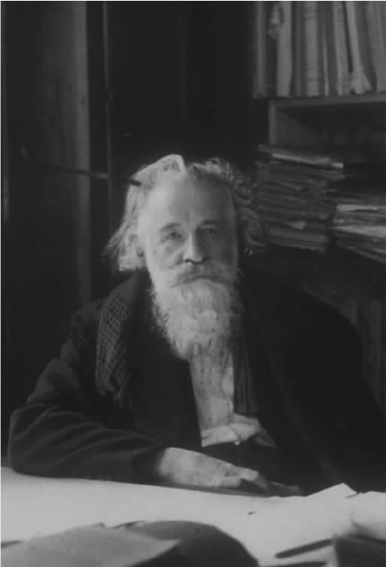

带着对身份惯常的逃避态度，福柯对哲学家这一称号时而承认、时而否认。当他同意接受一次作为哲学家观点系列之一的访谈时，福柯坚持隐匿自己的姓名，坚决作为“戴面具的哲学家”出现［“戴面具的哲学家”，《福柯主要作品集》（卷一），第321-328页］。
然而，官方相当肯定，福柯是一位哲学家。他持有该学科领域的高级学位（包括最高的博士学位），并曾在几所大学的哲学院系任教授之职。那么，他——或者说我们——又为何对此有所顾虑呢？
要为“某人是哲学家吗”这一问题找到一个有趣的答案，我们需要一个相关的背景框架，而最便捷的一种方法就是提供一些哲学活动的范例。福柯是像苏格拉底那样喝毒芹的哲学家，是像第欧根尼那样大白天拿着灯四处寻找的哲人，还是像笛卡尔那样闭门苦思的哲学家？在我们这个时代，哲学家的范式是康德式的，康德确立了哲学作为独立的理论思辨领域的地位：哲学不再像古时那样是指导人生的智慧，也不像中世纪那样，是神学的附庸，甚至不像笛卡尔和其他早期现代哲人所认为的那样，是对世界新的科学解释的组成部分。在康德那里——至少在三大批判的作者眼中，哲学与物理学和数学一样，是一个学术研究领域，有自己的理论目标、研究方法和研究范围。由此，哲学成为一个技术性、专业性的学科，若非以此为专业，即使是受过高等教育者也不能企及。例如，麦考利爵士就曾抱怨说，他能够读懂柏拉图、笛卡尔和休谟，却读不懂康德的《纯粹理性批判》（按照理查德·罗蒂的观点，这本书是每一个哲学家的必读之作）。
因此，我们有理由追问，福柯能否称得上是现代康德意义上的哲学家？官方的标准告诉我们，福柯至少接受过作为这个意义上的哲学家的相关训练并被授予了证书。但他的作品是否推动了现代（康德式）哲学研究的发展？
在此，让我们把目光转向福柯讨论康德和现代哲学的一篇文章，这篇题为“什么是启蒙？”的文章发表于1984年，即福柯去世那年。像典型的福柯风格那样，这篇文章并没有将康德的主要作品如三大批判作为研究的对象，而是选择了一篇较短的论说文章，认为它“或许是一个次要文本”［《福柯主要作品集》（卷三），第303页］，康德恰巧把这篇文章也命名为“什么是启蒙？”。文章一开始，福柯就暗示，可以把现代哲学定义为一系列回答康德问题的尝试：什么是启蒙？

图8 伊曼纽尔·康德
可是，这个问题究竟意味着什么？启蒙运动是具有鲜明现代特征的运动，旨在利用理性使人类从传统权威——包括智性的、宗教的和政治的权威——的束缚中解放出来。康德在文章中指出，启蒙的意义在于通过敢于自己去思考（sapere aude）、拒绝接受其他权威来克服我们的“不成熟”。福柯总结了康德所用的三个例子：“如果一本书代替了我们的理解，如果一个精神导师取代了我们的良知，如果一名医生替我们决定了饮食，我们就处于‘不成熟’状态。”［《福柯主要作品集》（卷三），第305页］
自己思考意味着运用理性：“事实上，在康德的阐述中，启蒙就是人类拒绝服从任何权威、利用自己的理性进行思考的时刻。”康德将自己对理性的批判研究视为启蒙发生的必要前提：“正是在这个关头批判显得尤为必要，因为它要界定出理性的运用在何种条件下才具有合法性”［《福柯主要作品集》（卷三），第308页］；也就是说，界定出那些限制着如何合理运用理性的条件。例如，在他的第一大批判里，康德的理论推理不能应用于宇宙起源、灵魂不灭等“终极问题”。
但福柯认为，康德论述启蒙的独特之处——也是其重要性所在——不在于他对理性的细致批判，而在于他对“自己哲学研究的当代地位”的反思之举［《福柯主要作品集》（卷三），第309页］。这也不是当代哲学如何在历史的整体结构中找到自身位置的问题（例如，是作为一个崭新未来的先声还是作为一个黄金时代逐渐逝去的垂暮之音），这个问题只是使我们当前的哲学研究方法有别于前人的做法。福柯认为，康德的反思是一项崭新的发展、重大的进步：把哲学研究的焦点从那些周而复始的问题转向我们当前状况的独特之处。
那么，我们当前的形势究竟有何特点呢？为了回答这个问题，福柯把他的讨论从康德的启蒙转向了波德莱尔的现代性。从某种意义上来说，这只是用另一套词汇来继续讨论同一个问题——因为启蒙是典型的现代运动，同时引入了新的例证，从康德的道德政治视角转向了波德莱尔的美学。但这一转变其实反映出在福柯看来我们当下的处境和康德处境的关键性区别。我们的（也就是波德莱尔的）现代性是从康德的启蒙发展而来的，但这一发展实质上已经对启蒙进行了改造。正如康德（在《什么是启蒙？》中）提出了他的处境如何有别于前人这样的问题，福柯的问题是，他的处境如何有别于康德。
想要解决这个问题，我们首先不能因循康德的思想，即对理性的批判可以揭示根本性的、普遍的（先验）真理，这些真理标志着人类经验和思想的界限。根据福柯的解读，现代性对于波德莱尔来说是一种态度，要在当下发现具有“永恒”价值的事物，同时努力“通过掌握其本质要义而不是通过破坏”来改造它。“波德莱尔的现代性是一种操练行为。在这种操练中，对真实性的极度关注遭遇了一种既尊重又违反真实性的大胆做法。”［《福柯主要作品集》（卷三），第311页］这里，我们可以想象一下库尔贝再现世俗场景时那种微妙的准确性，他的再现既保持了这一时刻又改造了它。此外，这种现代性的改造计划首先是对自我的改造：
［《福柯主要作品集》（卷三），第311页］
很显然，福柯并未全盘接受波德莱尔所绘制的现代性图景；例如，波德莱尔从丹蒂（dandy）的反自然优雅来理解自我改造，又比如他断言现代运动只是美学运动，不能在政治和社会层面上展开。但福柯的确吸收了一种总体的现代“特质”，他说，这种特质不存在于任何的学说或信条中，而是存在于对我们的历史时代的一种批判态度或倾向中。并且，和波德莱尔相同，这种倾向性指向对当前自我的改造。
至此，我们可以回到前文讨论的福柯和康德哲学研究的关系问题。福柯接受批评所指向的总体启蒙目标，但他颠倒了康德理论中对立的两极：
［《福柯主要作品集》（卷三），第315页］
这段重要的论述告诉我们，福柯最终把自己的研究定位为一种哲学批评。用康德的术语来说，它是批判性的 （仔细审视那些关于我们知识的范围和界限的假定），但和康德的研究不同，它不是先验的 。这就是说，福柯的研究并不声称是要揭示获取知识的必要条件，这些条件决定着我们在什么范畴之内体验并思考世界和我们自身。相反，福柯的批评审视的是那些必然性的断言，目的是通过展示它们的历史偶然性来削弱它们成立的基础。谈到他早期关于研究方法的讨论，福柯指出，他的研究“不是先验式的”，而是“采用考古学的方法去完成系谱学式的研究计划”。研究的方法是“考古学而非先验的，意即他的研究目标不是要找出所有知识（connaissance）或者所有可能的道德行为的一般结构，而是要把那些表述了我们的思想、言语、行为的话语实例作为历史事件来对待”［《福柯主要作品集》（卷三），315］。同样，福柯的研究计划之所以是系谱学的，原因在于他的研究不是为了发现“哪些是我们不可能做、不可能知道的”，而是要揭示“不再像我们现在这样存在、行动和思考的可能性”［《福柯主要作品集》（卷三），第315-316页］
因此，根据界定了现代哲学概念的康德词汇，福柯的哲学家身份就表现在他对哲学研究应具有总体的批判倾向这一观点的认同。但福柯和康德志趣不同，康德以及大多数现代哲学家们志在建立一个哲学真理的特殊领域，从而界定我们思想、体验和行为的必要条件。福柯则不同。例如，福柯对本质的现象学直觉体验不感兴趣，也无意于找到语言学分析所要寻找的必要和充分条件。他的兴趣在于揭示一些直觉体验或者语言分析很可能认为并不存在的可能性。福柯没有必要否认的是，现象学或者语言学分析或许会揭示一些具有本真必然性的普遍真理。但他的哲学研究不是为了揭示这些真理，而是要揭示那些戴着必然性面具的偶然性。此外，正如我们所看到的，他使用的方法——无论是考古学还是系谱学——都是历史研究方法，而非先验性的哲学分析方法。用康德式的词汇来说，称福柯是哲学家，那只是鉴于他对批判的一般性介入，而不是说他对自己的批判努力的特定理解，也不是说他将这种努力付诸实践的方法。
因此，我们很可能会下这样的结论：福柯不是任何实质意义上的哲学家——但我们不能忘记，自康德起，哲学就开始了对自身研究计划的持续批判。从德国的唯心论到分析哲学，多数情况下，哲学研究是宽泛的康德式研究。和尼采一样，福柯把批判推向极致，因为他拒绝接受哲学是一系列自治的真理这样的假说。然而，倘若这种批判倾向得以延续并最终获得胜利，福柯就很可能会作为一种新型哲学的创立者而饱受赞誉。如果说“某人是哲学家吗？”这一问题的答案取决于未来哲学史的发展，福柯一定不会感到不悦。
不管我们怎样为福柯归类，可以肯定的是，福柯的确具有一定的哲学背景，他的作品也经常触及哲学论题。对于自己的哲学背景，福柯曾作过简洁的表述：“我属于那样一代人，我们在学生时代眼前是由马克思主义、现象学以及存在主义所构成的地平线，我们的眼界也由此受到局限。”（《死亡与迷宫：雷蒙·鲁塞尔的世界》，访谈录，第174页）我们已经了解福柯早年对马克思主义的失望，而他和现象学及存在主义的联系相对而言更为持久，也更加复杂。福柯曾经师从梅洛-庞蒂，也做过让·伊波利特的学生：前者和萨特一样是征用胡塞尔现象学的法国存在主义者中的领军人物，而后者曾执笔一本重要的对黑格尔进行存在主义解读的作品。青年时期的福柯也受到海德格尔《存在与时间》的重要影响，正如我们在第三章所见，那时的福柯对路德维希·宾斯万格的海德格尔式存在主义精神病学（Daseinanalysis）尤其感兴趣。
无论福柯早年对存在主义现象学的热衷是什么性质，毫无疑问，他很快就觉得现象学叙述的主观立场有很多不足。但他究竟沿着怎样的轨迹实现了对存在主义现象学的疏离，这一点尚不明确。总体看来，20世纪60年代，当所谓的“结构主义”思潮蔚为壮观、大行其道之时，现象学逐步式微。这股新的思潮有诸多完善程度各异的理论观点，其共同之处在于，不同于现象学对生活体验的描述，它们解释人类社会的现象时着眼于潜在的无意识结构。这些理论包括索绪尔的语言学、拉康的心理分析、罗兰·巴特的文学批评、克劳德·列维-施特劳斯的人类学以及乔治·杜梅齐尔对古代宗教结构的比较研究。福柯一贯否认自己是结构主义者，并且嘲讽一些趣味平平的学术媒体把自己归入结构主义流派的做法。（在《临床医学的诞生》一书中，他曾多次谈到自己采取的是结构主义的研究方法，但在随后付印之时又特意将“结构主义”一词删除。）既然结构主义公然宣称自己是非历史（共时性而非历时性）的研究，无怪乎福柯要与之划清界限。但是，福柯的考古学显然和结构主义理论有契合之处（他也曾专门强调杜梅齐尔的作品对他的研究的重要性）；同时，他指出，较之于结构主义，现象学对语言和无意识所作描述的不足是导致其衰落的重要原因。
然而，福柯思想中的一些更明显的特点也使他与现象学相去甚远。例如，福柯强调先锋派文学中作者以及心理主体中心位置的消解具有重要意义，认为阅读尼采（指1953年前后，他受到巴塔耶和布朗肖的启发开始阅读尼采，而尼采的作品在当时的法国尚未盛行）对于他脱离以主体为中心的哲学理论起着重要作用［访谈录，“结构主义和后结构主义”，《福柯主要作品集》（卷二），第439页］。然而，最为重要的因素还是他对法国历史和科学哲学，尤其是乔治·康吉兰的研究的涉猎，要知道，康吉兰是福柯疯癫史论文的正式指导老师。
按照福柯自己的说法，康吉兰（以及他在索邦大学的前任加斯东·巴什拉）代表了一种与现象学截然不同的思维模式，这种思维强调驱动人类思想发展的是概念的逻辑而非生活体验。康吉兰的学生们——福柯显然把自己视为其中之一——摈弃现象学的“经验哲学”而接受了康吉兰的“概念哲学”。在20世纪60年代，康吉兰的概念史为福柯的考古学提供了重要的参考模式。多年以后，在一篇探讨康吉兰的文章［“生命：体验和科学”，《福柯主要作品集》（卷二），第465-478页］中，福柯勾勒出经验的一个生物性概念，以此取代现象学中以主体为中心的生活体验（vécu）。

图9 加斯东·巴什拉
但是至少对福柯而言，巴什拉和康吉兰的思想传统提供了一种可以取代现象学而不只是对它进行哲学批判的研究方法。要想找到福柯对现象学的哲学批判，我们就得把目光转向福柯在《事物的秩序》中对现代思想的研究。这本书的终极目标是要理解奠定现代社会科学之基础的考古学框架（即知识型），但由于福柯认为该框架是被“人”这一哲学概念——尤其是和康德思想相联系的“人”的概念——所主导，他的讨论也就包含了对现代哲学的批判。
自笛卡尔始，现代哲学的首要问题就是我们的表述（经验、观念）是否能准确地再现我们意识之外的世界。例如，笛卡尔就曾经发问，我们怎么能知道我们的观念和存在于我们之外、具有空间和时间维度的事物相对应？而休谟的问题是，我们如何确定我们对观念之间常规联系的经验（例如，太阳每天都会升起）和现实中的必然联系相对应？在康德之前，没有人能找到令人信服的答案（尽管有过类似休谟所提出的那种很有说服力的暗示，认为这些问题本身不需要答案）。
康德代表了一个重要的转折点，因为他对再现的可能性也进行了反思，不仅追问我们对世界的表述是否真实，而且质疑我们怎么可能对任何事物进行再现（无论准确与否）。康德坚信，这一转变之所以是关键性的，是因为对新的问题的回答可以为回答原来的问题提供一种思路。他特别指出，无论对什么对象，只有在一定条件下，再现才成为可能，例如，要求该对象存在于一定的空间和时间当中且是因果规律网络的组成部分。根据这种观点（康德称之为“先验演绎”），我们经验的对象必须存在于一定的空间和时间，同时受到必要的因果规律的制约，否则它们就不可能成为经验的对象。一方面，我们所认识的世界只是局限于我们的体验（现象的世界），而不是世界本身（本质的世界）。另一方面，这种局限性又使我们有可能对世界有客观的认识。
康德的知识观要求人类具备特殊的双重身份。一方面，我们是使认识世界成为可能的必要条件之源：作为“经验”领域知识的源头，我们是属于“先验”领域的存在。但同时，我们自己又是可知的（不仅可以通过经验，还可以通过社会科学获得关于我们的知识），因此属于经验领域的认知对象。福柯用“人”一词来指涉拥有该特定双重身份的人类（他把人称做“经验——先验双重复合体”）。他认为，在这种意义上，在18世纪末之前不存在人的概念。于是，他极富戏剧性地宣称，在19世纪之前，“人不存在”（《事物的秩序》，第308页）。
在福柯的现代哲学史中，人是一个核心问题，其难点在于，如何理解一个单个、统一的存在既是认知可能性的先验源头又是认知的对象。《事物的秩序》一书的第九章纵贯20世纪哲学的主要发展阶段——尤其是胡塞尔、萨特和梅洛-庞蒂的现象学，认为这些哲学发展无一能提出一种关于“人”的连贯观念。各种学说基本都涉及不合理的简化：要么是把经验领域简化为先验领域（如胡塞尔），要么是把先验简单地归入经验范畴（如梅洛-庞蒂）。
这一章是思想成熟期的福柯最接近标准的康德式哲学话语的论述。它读上去像是——正如我的体会一样——福柯在试图证明，现代哲学中所有对“人”的阐释（作为经验——先验双重复合体）都陷入了不连贯的泥淖。但这样的解读——尽管看似符合福柯的写作意图——背离了《事物的秩序》一书总体的考古学规划，因为在这里，福柯的讨论对象是观念的历史，即一系列作为个体的思想者试图解决同一个问题的经历，而不是针对支撑该历史的无意识结构的考古学研究。进一步说，作为一段观念史，它只能告诉我们某些哲学家没能解决他们的问题，而不能指出他们之所以没能解决问题的根本原因（很可能是考古学层面上的）。然而，如果我们把福柯的描述重新解释为真正的考古学论述，那么，“人”的概念显见的不连贯性只是说明我们的思维脱离了现代认知模式的指引，其结果就是，我们像博尔赫斯的中国百科全书的读者那样，感到“完全不可能那样 思考”。无论在哪种情况下，福柯都没能为支持或反对标准哲学的立场提供充分的理由。按照他自己的说法，这也不足为奇，因为提供这样的理由即要求福柯进入现代的知识型（康德意义上的哲学框架）本身，由此放弃他的考古学方法所要求保持的历史距离。笔者由此认为，即使是在他看似最哲学的时刻，福柯仍然没有参与后康德时代的现代哲学论争。
然而，还有一种进一步的可能性，《事物的秩序》一书的某些读者显然曾动心于这种可能性，即福柯或许像海德格尔那样试图开拓一条新的哲学思路，这条新的思路会带领我们走出现代的知识型。《事物的秩序》一书显然有海德格尔式的思维元素。其中最突出的就是对再现以及经验哲学的批判，这也正是《存在与时间》的一大主题；并且，如果福柯暗示说海德格尔自己也未能逃出再现主义者的图景，这只是标准的海德格尔式批判——对哲学导师的批判。同时，书中也谈到语言和存在的关系问题，这无疑是受到海德格尔晚期作品的启发：“语言和存在有何关系？语言真的是针对存在进行言说吗？”（《事物的秩序》，第306页）。开篇和结尾处对“人”这一观念的诘难似乎暗示我们正走向一个“人文精神”即将消亡的时代，这似乎是有意要使福柯更加接近海德格尔，因为海德格尔也曾在“关于人文精神的通信”中对萨特进行诘难。
然而，正是《事物的秩序》中体现的海德格尔式特征使此书不同于福柯的其他作品。这部作品中的哲学主题最为鲜明，同时关于伦理、政治的讨论也最少——对伦理政治的关注一向是福柯“关于现在的历史”的标志性特点。虽然福柯把这本书作为关于社会科学的考古学来写，但书中的分析很难与支配系统发生关联，而福柯后期的作品显示，社会科学和这样的系统密不可分。也许“人”这一观念的确是对我们思维的随意约束，但我们也没有感觉到，对这个概念的超越在显示智性活动的自由度之外还有其他意义。还值得记住的是，《事物的秩序》中大部分内容——尤其是大量关于科学思维模式的细致分析——并非海德格尔式论说。但是既然这本书被视为海德格尔式作品，它就表明福柯的其他作品并非如此。